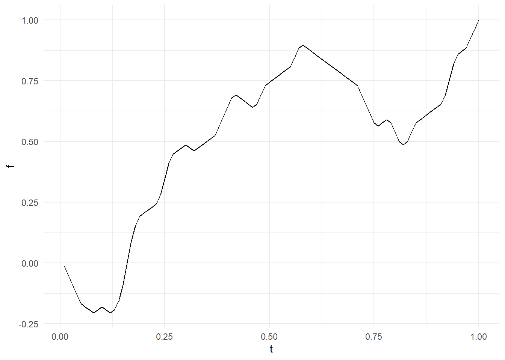

meandr allows for easy generation of coordinates that are random, yet continuously differentiable. This is particularly useful for simulating time-series measurements of physical phenomena that maintain a clear local trajectory.
Essentially, meandr provides an alternative to rnorm for noise generation.
You can call meandr() without any arguments! Each call returns a tibble of coordinates.
library(meandr)
df <- meandr()
df## # A tibble: 100 x 2
## t f
## <dbl> <dbl>
## 1 0.01 -0.0128
## 2 0.02 -0.0513
## 3 0.03 -0.0897
## 4 0.04 -0.128
## 5 0.05 -0.167
## 6 0.06 -0.179
## 7 0.0700 -0.192
## 8 0.08 -0.205
## 9 0.09 -0.192
## 10 0.10 -0.179
## # ... with 90 more rows